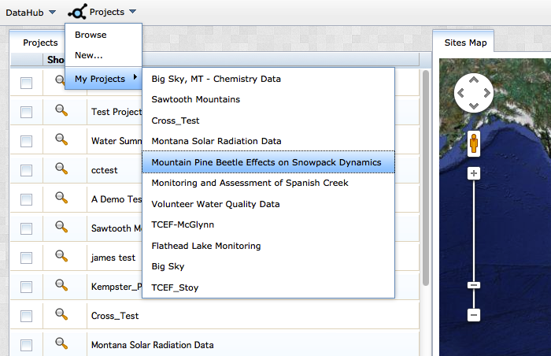
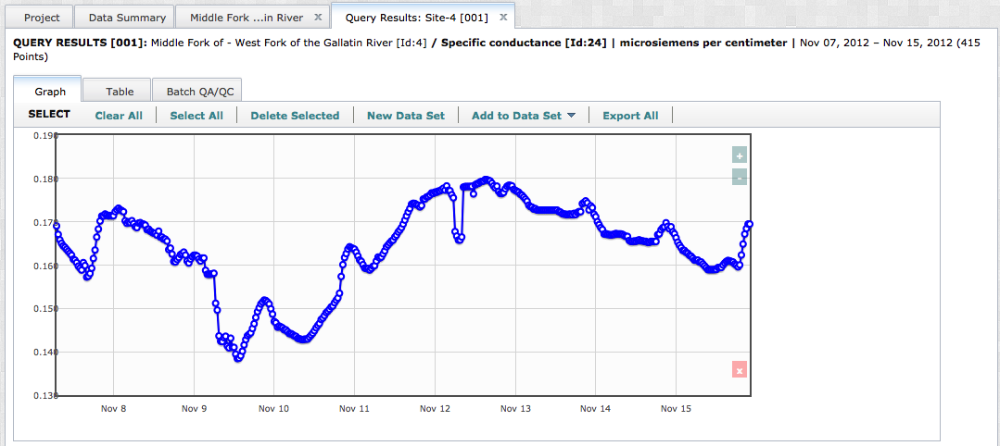
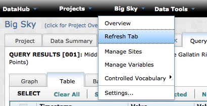

DataSets provide users with a flexible and powerful tool for assigning data values to one or many different membership groups. A DataSet may consist of one or more data values representing one or more variables collected at one or more sites. There is no limit to the number of DataSets that any particular data value belongs to.
Creating Data Sets
To create a DataSet you must query some data using the Simple Data Search workflow. Navigate to the (Project_Show) page of the project you are interested. Remember, you will only be able to query and QAQC data from projects where you have the appropriate access permissions. Open the (Project_Show) page by selecting the project name from the Projects dropdown menu.

In the (Project_Show) page with the Data_Summary tab open, select the site you are interested in. The (Site_Name) tab will open. Select the option: "DATA QUERY QA/QC" from the options at the top of the page.

You will be directed to a tab where you will define your query. You need to select a variable from the dropdown list, and a date range you are interested in. When you are finished, click "Display Query Results".

A new tab will open with your query results. The interactive graphing widget on this tab allows you to select one or more data values, which are then highlighted in the table view of the data. The (+/-) buttons on the top right of the graph allow users to modify the zoom/extent of the graph. Click the 'Table' tab to see a data grid containing all of the data values that were returned by your query. You can filter the values that appear in the table by clicking the small button with the yellow arrow located in the upper left. This button calls the pop-out window below. Custom filtering rules are described using Boolean logic and applied to either a single column or multiple columns.

You have the option of either adding data to an existing DataSet, or defining a new DataSet for your data. To define a new DataSet, select 'New Data Set' from the toolbar above the table or graph. A dialog box will open, allowing you to name and describe a new DataSet.
Alternately, DataSets may be created by selecting the 'NEW DATA SET' option from the Data Tools dropdown menu.
When you are finished, click 'Create Data Set'. You new DataSet should now appear in the 'Add to Data Set' dropdown list located in the toolbar above the Table or Graph views. If the new DataSet does not appear in this dropdown, select 'Refresh Tab' from the (Project_Name) dropdown menu as displayed below:

To add data to a DataSet, select the data points of interest from the Graph or Table view. Select multiple values in the Graph view by holding down the Shift key and clicking the values of interest. Select values from the Table view by clicking the checkboxes in the corresponding rows. Load selected data points to a DataSet by choosing the target DataSet from the 'Add to Data Set' dropdown in the toolbar.
Managing Data Sets
You can interact with and manage DataSets stored in VOEIS by selecting the DataSet Name from the 'Data Tools' dropdown menu.
Upon selection of a DataSet, a new tab opens displaying the data values associated with that DataSet. To remove data values from the DataSet, select them by checking the checkboxes in the corresponding rows. Then click the 'Remove Selected Data' button. To export the entire DataSet as a .csv file, click the 'Export Data Set' button.
Created with the Personal Edition of HelpNDoc: Create iPhone web-based documentation